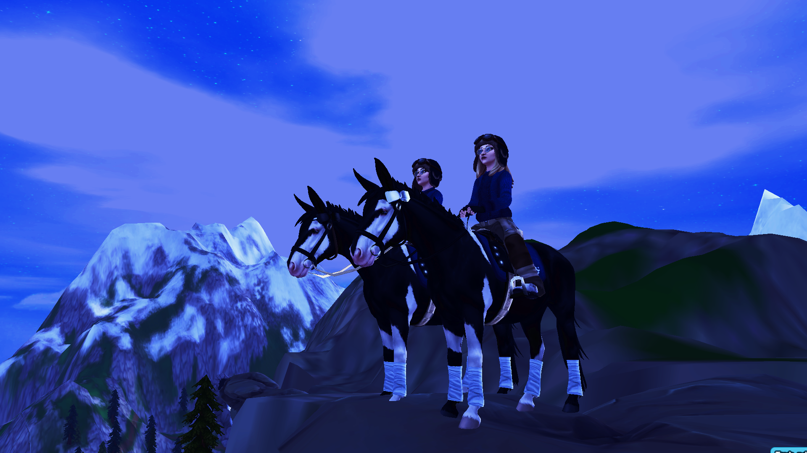
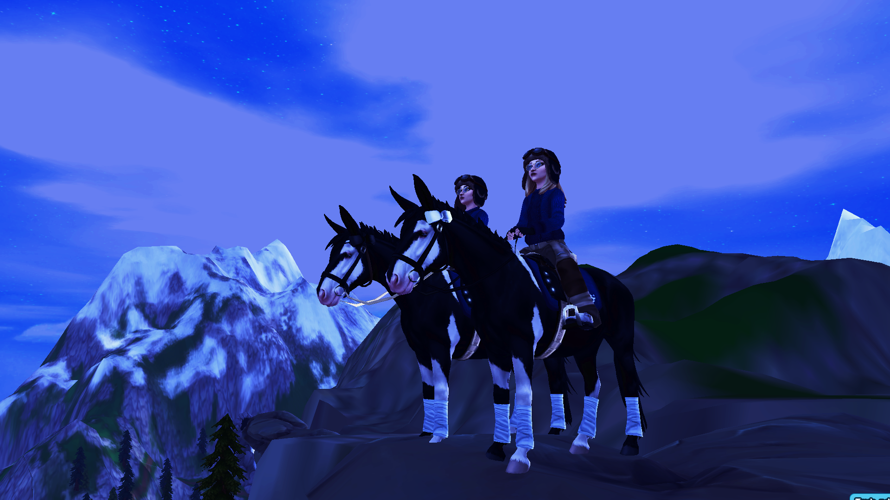

💖 Cytat miłosny 💖
🌤 Słowa otuchy 🌤
Niech ten dzień przypomni Ci, że jesteś kochana najbardziej na świecie. 💕
Wszystko, co trudne – minie. Zawsze będę przy Tobie, nawet z daleka. 🌙
- 🌸 Nawet najciemniejsze dni miną, a ja zawsze będę przy Tobie.
- 🌙 Nie musisz być sama – moje serce jest z Tobą, nawet z daleka.
- 🌹 Twój uśmiech jest moim ulubionym światłem – nigdy o tym nie zapominaj.
- 🌼 Każda łza przybliża nas do piękniejszych chwil.
- 💗 Nawet gdy jesteśmy daleko, trzymam Cię w swoich myślach i sercu.
- 🌻 Nie martw się o jutro – dziś możemy cieszyć się tym, co mamy.
- 🌊 Czasem wystarczy oddech i chwila spokoju, by poczuć, że wszystko będzie dobrze.
- 🌟 Pamiętaj, że jesteś silniejsza niż myślisz.
- 💌 Każdy smutek stanie się wspomnieniem, a nasze wspólne chwile będą jaśniejsze niż kiedykolwiek.
- 🃠Nie musisz być perfekcyjna – dla mnie jesteś idealna dokładnie taka, jaka jesteś.
- 🌈 Po burzy zawsze wychodzi słońce, a ja będę przy Tobie, by je podziwiać.
- 💖 Gdy czujesz się przygnębiona, pomyśl o mnie – wysyłam Ci całe swoje ciepło.
- 🌷 Wszystkie trudności stają się lżejsze, gdy je dzielimy, nawet na odległość.
- 🌺 Nigdy nie zapominaj, że jesteś kochana, niezależnie od wszystkiego.
- 🌸 Nawet najmniejsze sukcesy zasługują na świętowanie – i ja świętuję je razem z Tobą.
- 🌙 Każdy dzień jest lepszy, bo jesteś w moich myślach.
- 💕 Twój spokój i obecność w moim życiu dają mi radość.
- 🌹 Wszystko, co dzieli nas fizycznie, łączy nas emocjonalnie.
- 🌼 Pamiętaj, że po każdej nocy zawsze wschodzi słońce, a my razem będziemy je widzieć.
- 💘 Twoje piękne oczy, w których widzę cały świat.
- 💘 Twój uśmiech, który rozświetla każdy dzień.
- 💘 Twój charakter – silny, ale pełen czułości.
- 💘 Twój głos, który koi moje serce.
- 💘 Twoja talia – piękna i elegancka.
- 💘 Twoja dłoń w mojej dłoni.
- 💘 Twoje poczucie humoru.
- 💘 Twoja cierpliwość wobec mnie.
- 💘 Twój sposób patrzenia na życie.
- 💘 Twoja wrażliwość.
- 💘 To, jak potrafisz mnie zrozumieć bez słów.
- 💘 Twoja siła w trudnych chwilach.
- 💘 Twój poczucie stylu.
- 💘 Twoje włosy – miękkie i pachnące.
- 💘 Twój sposób śmiania się.
- 💘 Twoja inteligencja.
- 💘 To, jak mnie inspirujesz.
- 💘 Twój delikatny dotyk.
- 💘 Twoja empatia wobec innych.
- 💘 Twoje marzenia, które Cię definiują.
- 💘 Twój urok osobisty.
- 💘 Twoja kreatywność.
- 💘 To, jak mnie motywujesz.
- 💘 Twoja odwaga.
- 💘 Twój styl bycia.
- 💘 Twoje dłonie – piękne i delikatne.
- 💘 Twój zapach.
- 💘 Twoje oczy, gdy się śmiejesz.
- 💘 To, jak troszczysz się o mnie.
- 💘 Twój entuzjazm do życia.
- 💘 Twoja naturalność.
- 💘 Twoja delikatność.
- 💘 Twoja siła wewnętrzna.
- 💘 Twój sposób chodzenia.
- 💘 Twoja spontaniczność.
- 💘 To, jak patrzysz na świat.
- 💘 Twoja determinacja.
- 💘 Twoje ciepło.
- 💘 Twój sposób wyrażania uczuć.
- 💘 Twoja wdzięczność za małe rzeczy.
- 💘 Twój urok, który przyciąga ludzi.
- 💘 Twoja troskliwość.
- 💘 To, jak mnie rozumiesz, nawet gdy milczę.
- 💘 Twój optymizm.
- 💘 Twoja wytrwałość.
- 💘 Twoja delikatna skóra.
- 💘 Twój sposób bycia sobą.
- 💘 Twoja energia, która mnie inspiruje.
- 💘 Twoje spojrzenie pełne miłości.
- 💘 To, jak kochasz życie.
- 💘 Twój talent do słuchania.
- 💘 Twoja radość życia.
- 💘 Twoje ramiona, w których chcę być.
- 💘 Twoja czułość wobec zwierząt.
- 💘 Twój głęboki oddech, gdy jesteśmy blisko.
- 💘 Twoja niezależność.
- 💘 Twój humor w trudnych chwilach.
- 💘 To, jak mnie wspierasz.
- 💘 Twój sposób gotowania.
- 💘 Twoje oczy, kiedy jesteś szczęśliwa.
- 💘 Twoja naturalna elegancja.
- 💘 To, jak przy Tobie czuję się bezpiecznie.
- 💘 Twoja szczerość.
- 💘 Twój zmysł estetyki.
- 💘 Twój urok w każdej sytuacji.
- 💘 Twój sposób świętowania małych rzeczy.
- 💘 Twój zapach w mojej pamięci.
- 💘 Twoje dłonie, gdy mnie obejmują.
- 💘 Twoja cierpliwość wobec życia.
- 💘 Twój sposób myślenia.
- 💘 Twoja wierność wartościom.
- 💘 Twój entuzjazm do nowych doświadczeń.
- 💘 Twoja szczodrość wobec innych.
- 💘 Twoja wrażliwość na piękno.
- 💘 To, jak się śmiejesz.
- 💘 Twoja wyobraźnia.
- 💘 Twoje spojrzenie pełne ciepła.
- 💘 Twój sposób patrzenia na mnie.
- 💘 Twoja obecność sprawia, że świat staje się lepszy.
- 💘 Twój głos w chwilach spokoju.
- 💘 To, jak się starasz dla mnie.
- 💘 Twój styl komunikacji.
- 💘 Twoja serdeczność wobec ludzi.
- 💘 Twoja pewność siebie.
- 💘 Twój uśmiech w deszczowe dni.
- 💘 To, jak pamiętasz ważne szczegóły.
- 💘 Twój spokój w chaosie.
- 💘 Twoja szczerość wobec siebie.
- 💘 Twój sposób rozwiązywania problemów.
- 💘 To, jak mnie inspirujesz do bycia lepszym.
- 💘 Twój optymizm w każdej sytuacji.
- 💘 Twój sposób trzymania mnie za rękę.
- 💘 Twoje spojrzenie pełne troski.
- 💘 To, jak potrafisz być zabawna i poważna jednocześnie.
- 💘 Twój zapach w moich wspomnieniach.
- 💘 Twoja umiejętność słuchania.
- 💘 Twój śmiech, który zawsze mnie rozśmiesza.
- 💘 To, że jesteś sobą i to kocham najbardziej.
- 💘 Bo każdego dnia pokazujesz mi, czym jest prawdziwa miłość.
📸 Nasze wspomnienia i moje zdjęcia 📸


 
